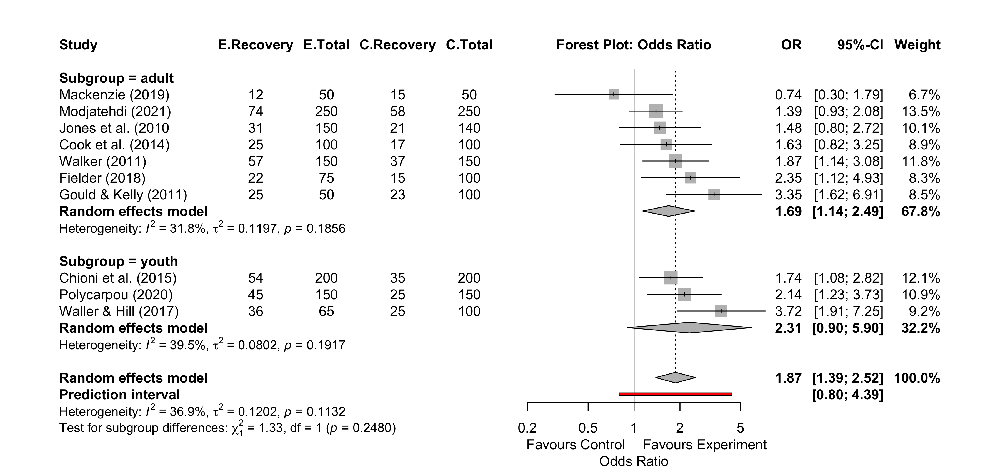
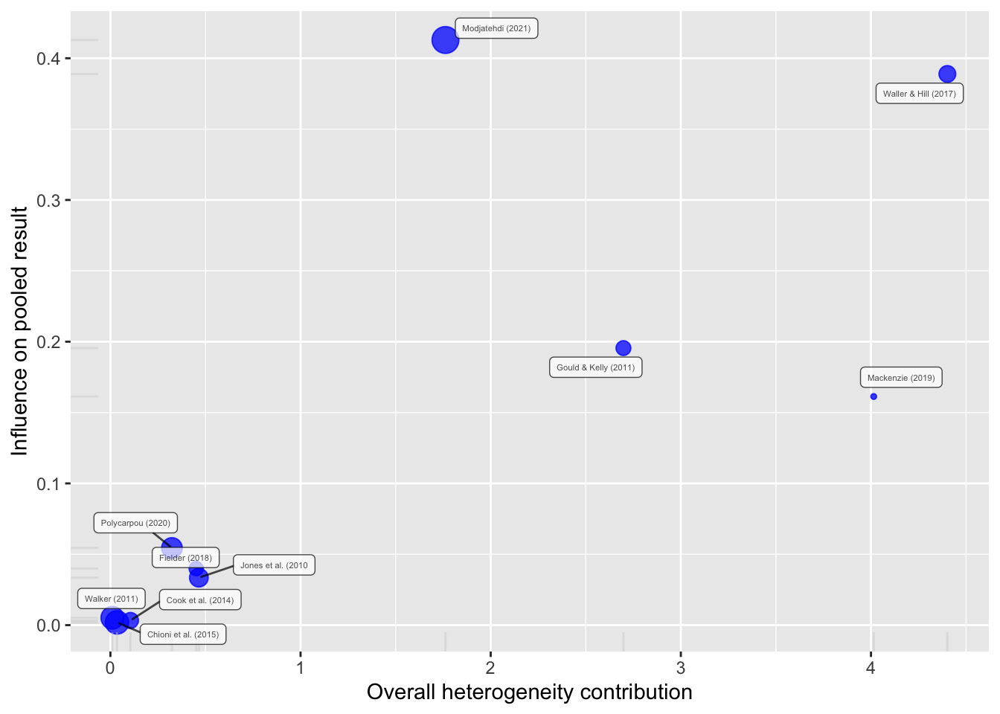
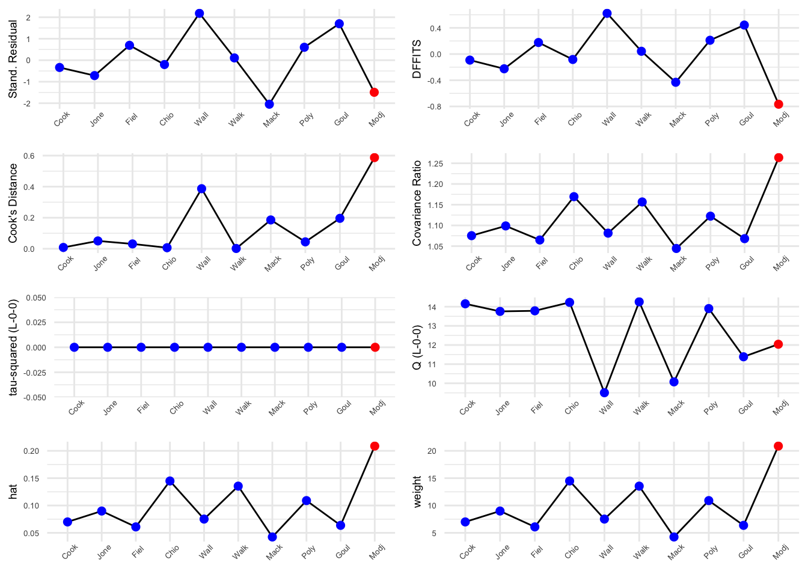
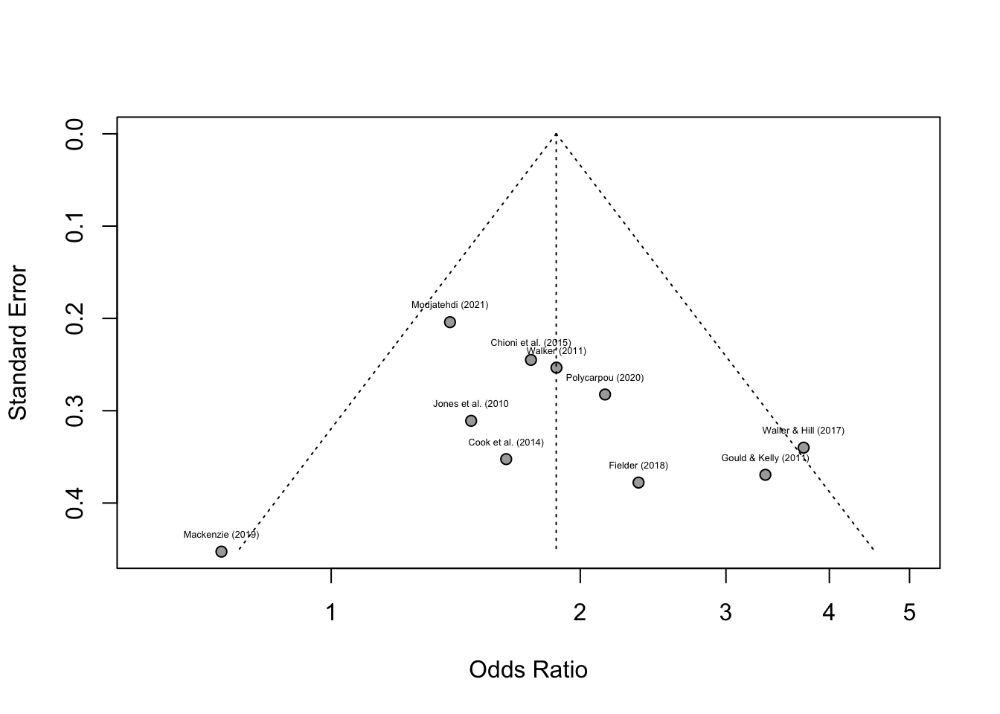

This chapter shows how to do a meta-analysis on raw data in which the counts of binary events are recorded for (a) an experimental and (b) a control group, as well as the sample sizes (N) of both groups.
Binary events are where there are two possible outcomes. For example, numbers reporting success/failure, recovery/no recovery, survival/death, or male/female in experimental and control groups.
The data you need for both the experimental and control groups are (a) the count of one of the binary events, eg survival, and (b) the total number of people in each group.
3.1 Import the data file & prepare it for analysis:
Click to see guidance to import and prepare the data
Download the example Excel file Meta analysis Binary data.xlsx from Canvas and save it to your working directory (remember to set the location where you save this file as your working directory in RStudio).
Import the file to R and store it as a dataframe object called meta.bin:
You can see that the Subgroup variable is now a factor
3.2 The meta-analysis
(See Ch4 Harrer et al.) This will use a random effects model using the imported binary data stored in the meta.bin object. The meta-analysis results are stored in an object called meta.bin.result.
This data set has two sub-groups: studies on (a) adults and (b) youths. This meta-analysis will therefore analyse these separately as sub-groups as well as combining all studies. The code therefore has a line specifying ‘subgroup’ as the column in the data headed ‘Subgroup’.
The study label column name in the data file is ‘Author’
3
Specifies that there are sub-groups in a column called ‘Subgroup’
4
Method used to calculate tau squared. SJ = Sidik-Jonkman
5
Confidence Intervals calculated with Hartung-Knapp adjustment
6
Calculates the prediction interval
7
The effect size (OR = Odds Ratio)
8
Produces the output
Click to see the output of the meta-analysis
Review: Staff studies binary
OR 95%-CI %W(random) Subgroup
Cook et al. (2014) 1.6275 [0.8157; 3.2471] 8.9 adult
Jones et al. (2010 1.4762 [0.8025; 2.7153] 10.1 adult
Fielder (2018) 2.3522 [1.1217; 4.9327] 8.3 adult
Chioni et al. (2015) 1.7436 [1.0788; 2.8181] 12.1 youth
Waller & Hill (2017) 3.7241 [1.9126; 7.2515] 9.2 youth
Walker (2011) 1.8718 [1.1393; 3.0754] 11.8 adult
Mackenzie (2019) 0.7368 [0.3034; 1.7892] 6.7 adult
Polycarpou (2020) 2.1429 [1.2320; 3.7271] 10.9 youth
Gould & Kelly (2011) 3.3478 [1.6230; 6.9057] 8.5 adult
Modjatehdi (2021) 1.3918 [0.9330; 2.0763] 13.5 adult
Number of studies: k = 10
Number of observations: o = 2580 (o.e = 1240, o.c = 1340)
Number of events: e = 652
OR 95%-CI t p-value
Random effects model 1.8705 [1.3875; 2.5217] 4.74 0.0011
Prediction interval [0.7976; 4.3867]
Quantifying heterogeneity (with 95%-CIs):
tau^2 = 0.1202 [0.0000; 0.5582]; tau = 0.3467 [0.0000; 0.7471]
I^2 = 36.9% [0.0%; 69.9%]; H = 1.26 [1.00; 1.82]
Test of heterogeneity:
Q d.f. p-value
14.27 9 0.1132
Results for subgroups (random effects model):
k OR 95%-CI tau^2 tau Q I^2
Subgroup = adult 7 1.6870 [1.1424; 2.4912] 0.1197 0.3460 8.79 31.8%
Subgroup = youth 3 2.3054 [0.9008; 5.9006] 0.0802 0.2832 3.30 39.5%
Test for subgroup differences (random effects model):
Q d.f. p-value
Between groups 1.33 1 0.2480
Details of meta-analysis methods:
- Inverse variance method
- Sidik-Jonkman estimator for tau^2
- Q-Profile method for confidence interval of tau^2 and tau
- Calculation of I^2 based on Q
- Hartung-Knapp adjustment for random effects model (df = 9)
- Prediction interval based on t-distribution (df = 9)
The output shows:
the effect sizes (OR) and CIs for each study
the overall effect size = 1.8705; it is statistically significantly different from 1 (no effect) because P = 0.0011.
There is low heterogeneity between the studies: I2 = 36.9%, Q p-value = 0.1132
The 2 sub-group effect sizes are 1.687 (adults) and 2.305 (youth), but the two groups are not statistically significantly different (P=0.248)
NB1 Odds ratio = 1 means that the effect of the experimental group is the same as the control group. In this study the OR = 1.87, and so overall the odds of success in the experimental group are 1.87 times that in the control group. NB2 The metabin() function automatically converts odds to log odds for the calculations, but the reconverts them back to normal odds for the output
To see the log odds (loge) value of the pooled effect size
meta.bin.result$TE.random
[1] 0.6262237
To convert the loge it back to normal, take the exponential:
exp(meta.bin.result$TE.random)
[1] 1.870533
3.3 The Forest Plot
(See Ch6 Harrer et al.) The forest plot presents the results of the meta-analysis graphically. It uses the meta-analysis results created above which were stored in an object called meta.bin.result.
This line will save the plot in a png file. Can also save as a pdf() or svg(). Harrer et al. Ch6.
2
Turns off the png() function.
The forest plot has a default layout, but you can specify which columns to include with leftcols() and re-title them with leftlabs(). rightcols() specifies which columns appear on the right. Other arguments specify layout - see Harrer et al. Ch 6.
The forest plot looks like this:

3.4 Influence Diagnostics
Influential cases have a large impact on the pooled effect or heterogeneity, regardless of how high or low the effect is. For example one very large study will have a high weight and may influence the pooled effect strongly. Outliers may be influential, but not always.
(a) To calculate influence diagnostics, use the InfluenceAnalysis() function (part of the dmetar package):
(b) Then create a Baujat plot: this detects studies that strongly influence heterogeneity. It shows the contribution of each paper to heterogeneity on x-axis & its influence (via leave-one-out method) on the pooled effect size on y-axis. Studies in top right have strong effect on heterogeneity and pooled effect.
plot(meta.bin.infl, "baujat")
Click to see the Baujat plot

(c) A plot of the full influence diagnostics can be seen with the plot() function. Studies thought to be influential are displayed in red.
plot(meta.bin.infl, "influence")
Click to see the influence diagnostics plot plot

Stand. residual: standardised residuals are the standardised deviation of the effect size of each paper from the pooled effect size.
DFFITS value: reports similar effect to Stand. residuals. Indicates how much the pooled effect changes when a study is removed, expressed in standard deviations (ie how much influence the paper has).
Cook’s distance: similar to DFFITS calculation, but only has +ve values. Large value = strong influence.
Covariance ratio: calculates how variance of the pooled effect size changes when a study is removed. Value <1 indicates that removing a study results in a more precise estimate of the pooled effect size.
Tau-squared (L-O-O means Leave one out) & Q values: Tau-square (variance of the pooled effect size) and Q-values when each study is excluded.
Hat and Weight values: weight is simply the size of the study. Higher weight = greater precision of a study. Weights used to calc pooled effect size. Inverse of the variance of a study = weight. HAT value is similar.
3.5 Publication Bias
Publication bias occurs when studies, usually smaller ones, are not published because they do not report statistically significant effects. Consequently, a meta-analysis could over-emphasise an effect if such papers are excluded. Publication bias tests attempt to estimate if there might be such missing papers. Here, we will create (1) a funnel plot, (2) perform Egger’s regression test and (3) Duval & Tweedie’s trim-and-fill test.
3.5.1 The Funnel Plot
To generate a funnel plot for the meta1.cont object that stores the results of the meta-analysis:
The number indicates the position of the labels. 3 means centered.
4
Changes the font size of the text for the study labels
5
Use xlim() if you want to change the range on the x-axis
Click to see the funnel plot

3.5.2 Egger’s Regression
Assesses funnel plot symmetry. If the funnel plot is symmetrical, it suggests that there are no missing studies. In this case, meta.bin has subgroups. Egger’s regression test cannot be performed on a meta-analysis with subgroups. So, I will re-do the above meta-analysis without the subgroups and store it in another object called meta.bin.resultE:
meta.bin.resultE <-metabin(event.e = Ee, n.e = Ne, event.c = Ec, n.c = Nc, data = meta.bin,studlab = Author, common =FALSE, random =TRUE, method.tau ="SJ", method.random.ci ="HK", prediction =TRUE, sm ="OR",title ="Staff studies binary")
and then do the Egger’s regression test:
metabias(meta.bin.resultE, method.bias ="peters")
Click to see Egger’s Regression test output
Review: Staff studies binary
Linear regression test of funnel plot asymmetry
Test result: t = 0.58, df = 8, p-value = 0.5788
Bias estimate: 36.4800 (SE = 63.0483)
Details:
- multiplicative residual heterogeneity variance (tau^2 = 7.2802)
- predictor: inverse of total sample size
- weight: inverse variance of average event probability
- reference: Peters et al. (2006), JAMA
P>0.05 means the data is symmetrical, and there do not appear to be any missing studies.
3.5.3 Duval & Tweedie’s trim-and-fill
If there is asymmetry, it imputes ‘missing’ studies and adds them until symmetry is achieved. Assumes there are small studies that are missing. It re-does the meta-analysis and estimates pooled effect size as if all studies had been included.
tf.bin <-trimfill(meta.bin.result)tf.bin
Click to see Duval & Tweedie’s trim-and-fill output
Review: Staff studies binary
Number of studies: k = 10 (with 0 added studies)
Number of observations: o = 2580 (o.e = 1240, o.c = 1340)
Number of events: e = 652
OR 95%-CI t p-value
Random effects model 1.8705 [1.3875; 2.5217] 4.74 0.0011
Prediction interval [0.7976; 4.3867]
Quantifying heterogeneity (with 95%-CIs):
tau^2 = 0.1202 [0.0000; 0.5582]; tau = 0.3467 [0.0000; 0.7471]
I^2 = 36.9% [0.0%; 69.9%]; H = 1.26 [1.00; 1.82]
Test of heterogeneity:
Q d.f. p-value
14.27 9 0.1132
Details of meta-analysis methods:
- Inverse variance method
- Sidik-Jonkman estimator for tau^2
- Q-Profile method for confidence interval of tau^2 and tau
- Calculation of I^2 based on Q
- Hartung-Knapp adjustment for random effects model (df = 9)
- Prediction interval based on t-distribution (df = 9)
- Trim-and-fill method to adjust for funnel plot asymmetry (L-estimator)
Here, you can see that the function has not added any additional studies which it has assumed have not been published. The odds ratio effect size remains at 1.8705.
You can then also re-do the funnel plot, using the tf.bin object that we have just created above, with the imputed studies added (NB there is no need to do this for this example data as there are no imputed missing studies, but it is done here to show you how):